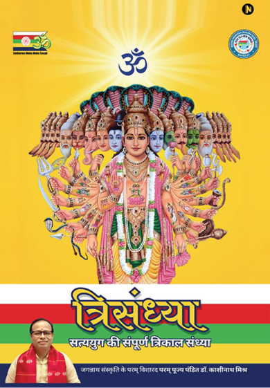

Trikala Sandhya
ॐViswa Sanatan Dharma Seva Trust
॥ Jai Shree Madhava ॥

"For human civilisation, Trisandhya is like the elixir of life."
Perform Trisandhya at all three sandhya hours every day, read one chapter of the Shrimad Bhagavata Mahapurana daily, and chant the name Madhav constantly within the mind.
Hold the following 5 teachings along with the Trikal Sandhya
1. Learn to obey.
2. Learn to wait.
3. Learn to love and show compassion to all living beings.
4. Restraint of the senses.
5. Give up the feeling of “I and mine, you and yours” (the sense of ego).
The Three Times of Trisandhya
Trisandhya Contents
- 1. Mantras
- 2. Shri Vishnu Shodasha Nama Stotra
- 3. Shri Dashavatara Stotra
- 4. Durga-Madhaba Stuti
- 5. 108 times “Madhav” name (silently)
- 6. Jayghosha
Note: Please listen to the official audio for proper pronunciation.
1. Mantras
Bhargo Devasya Dhimahi Dhiyo Yonah Prachodayat ॥ ] * 3 times
2. Shri Vishnu Shodasha Nama Stotra
(Sixteen Names of Shri Vishnu)
Shayane Padmanabham Cha । Vivahe Cha Prajapatim ॥
Yuddhe Chakradharam Devam । Pravase Cha Trivikramam ॥
Narayanam Tanutyage । Shridharam Priyasangame ॥
Duhsvapne Smara Govindam । Sankate Madhusudanam ॥
Kanane Narasimham Cha । Pavake Jalashayinam ॥
Jalamadhye Varaham Cha । Gamane Vamanam Chaiva ॥
Parvate Raghunandanam ।
3. Shri Dashavatara Stotra
(Dashavatara Stotram composed by Shri Jayadeva Ji)
Pralaya Payodhi-jale Dhritavan Asi Vedam ।
Vihita Vahitra-charitram Akhedam ॥
Keshava Dhrita-Mina Sharira Jaya Jagadisha Hare ॥ 1 ॥
Kshitirati Vipulatare Tava Tishthati Prishthe ।
Dharani Dharana Kina Chakra Garishthe ॥
Keshava Dhrita-Kachchhapa-rupa Jaya Jagadisha Hare ॥ 2 ॥
Vasati Dashana-shikhare Dharani Tava Lagna ।
Shashini Kalanka Kaleva Nimagna ॥
Keshava Dhrita-Shukara Rupa Jaya Jagadisha Hare ॥ 3 ॥
Tava Kara Kamala-vare Nakham Adbhuta Shringam ।
Dalita-Hiranyakashipu-tanu Bhringam ॥
Keshava Dhrita-Narahari Rupa Jaya Jagadisha Hare ॥ 4 ॥
Chhalayasi Vikramane Balim Adbhuta Vamana ।
Pada-nakha Nira Janita Jana-pavana ॥
Keshava Dhrita-Vamana Rupa Jaya Jagadisha Hare ॥ 5 ॥
Kshatriya Rudhira Maye Jagad-apagata Papam ।
Snapayasi Payasi Shamita Bhava Tapam ॥
Keshava Dhrita-Bhrigupati-rupa Jaya Jagadisha Hare ॥ 6 ॥
Vitarasi Dikshu Rane Dika Pati Kamaniyam ।
Dasha-mukha Mauli-balim Ramaniyam ॥
Keshava Dhrita-Raghupati Rupa Jaya Jagadisha Hare ॥ 7 ॥
Vahasi Vapushi Vishade Vasanam Jaladabham ।
Hala-hati-bhiti-milita-Yamunabham ॥
Keshava Dhrita-Haladhara-rupa Jaya Jagadisha Hare ॥ 8 ॥
Nindasi Yajna Vidher Ahaha Shruti Jatam ।
Sadaya Hridaya Darshita Pashu-ghatam ॥
Keshava Dhrita-Buddha-sharira Jaya Jagadisha Hare ॥ 9 ॥
Mlechchha Nivaha Nidhane Kalayasi Karavalam ।
Dhumaketum-iva Kim Api Karalam ॥
Keshava Dhrita-Kalki Sharira Jaya Jagadisha Hare ॥ 10 ॥
Shri-Jayadeva-kaver Idam Uditam Udaram ।
Shrinu Sukha-dam Shubha Dam Bhava-saram ॥
Keshava Dhrita-Dasha-vidha Rupa Jaya Jagadisha Hare ॥ 11 ॥
4. Durga-Madhaba Stuti
(Durga - Madhava Stuti Recitation)
Jaya He! Durga Madhaba Krupamaya Krupamayee ।
Durganku Sebi Madhaba Hoile Mo Dian Saim ॥ 0 ॥
Jaya He ...
Bahu Rupe Jaya Durge, Byapi Achhu Sarva Thabe ।
Rama Uma Bani Radha To Chhada Anya Ke Nahin ॥ 1 ॥
Jaya He ...
Madana-Mohana Rupe Byapi Achhu Sarva Thabe ।
Mohana Chitta Mohilu Shri Sarva Mangala Tuhi ॥ 2 ॥
Jaya He ...
Dharma Sansthapanne Janma Yadi Hvanti Narayana ।
Durganku Chhadi Madhaba Kheli Bara Shakti Kahin ॥ 3 ॥
Jaya He ...
Madhabanka Khela Pain Deha Dharu Mahamayee ।
Madhabanku Pati Putra Rupe Khelaouchhu Tuhi ॥ 4 ॥
Jaya He ...
Madhabanku Durga Kole Jehun Dekhe Beni Dole ।
Tahara Bhagyar Katha Brahma Shibe Na Jogai ॥ 5 ॥
Jaya He ...
Jaya Durgati Nashini Abhiramar Janani ।
Shubhagamana Karantu Madhabanku Kole Nei ॥ 6 ॥
Jaya He ...
5. 108 times “Madhav” name (silently)
Chant the 'Madhava' name of Jagannatha Mahaprabhu 108 times.
Do not say it aloud. Count on your fingers and chant the name mentally.
6. Jayghosh
The Jayaghosha is to be recited mentally, without speaking aloud.
(It may only be chanted aloud if you are in a standing position.)
Tvameva Mata Cha Pita Tvameva
Tvameva Bandhushcha Sakha Tvameva ।
Tvameva Vidya Dravinam Tvameva
[ Tvameva Sarvam Mama Deva Deva ] ॥ * 3 times
Om Namo Brahmanya Devaya Gobrahmanahitaya Cha ।
Jagat Hitaya Krishnaya Govindaya Namo Namah ॥
[ Om Ananta Koti Vishva Brahmanda Natha Parabrahma Narayana Mahavishnu Bhagavan Kalkiram Shri Shri Shri Satya Ananta Madhava Mahaprabhu Ji ki Jaya! ] * 3 times
[ Mata Mahalakshmi Ji ki Jaya! ] * 3 times
[ Mata Vaishno Devi Ji ki Jaya! ] * 3 times
[ Sarva Devi-Devataom ki Jaya! ] * 3 times
[ Satya-Sanatana Dharma ki Jaya! ] * 3 times
[ Sudharma Maha-Maha Sangha ki Jaya! ] * 3 times
O Lord! May all the devotees of the whole world be gathered together as soon as may be —
Say joyfully once: "Hari Hari", "Hari Hari", "Hari Hari"
O Lord! May Truth, Love, Compassion, Forgiveness and Peace be established upon this earth, entire universe as soon as may be —
Say joyfully once: "Hari Hari", "Hari Hari", "Hari Hari"
Jai Shree Madhava
Important Instructions
Even now, when both science and spirituality sense the approach of the great change to come, humanity has no certain means of overcoming this crisis. According to the ‘Bhavishya Malika’ — give up sinful deeds, and let the people of every faith adopt ‘Trisandhya’ for the protection of life. At this time of the turning of the age, this secret principle is the one and only Mrita Sanjivani for the protection of life. According to the instructions of Lord Kalki, we should follow these things in our lives:
1. Show compassion to all living beings. Give up eating meat and adopt a sattvic life. Do not harm any living being or any human in any way.
2. In this age, chant the name of Madhav (the Lord). If you wish, you may chant aloud or remember His name silently in the mind.
3. Every person should hold to these five virtues: Truth, Love, Compassion, Forgiveness and Peace.
4. Every person should take part in Satsang regularly. Satsang means gathering together to sing the qualities of God, to describe His glory, and to hold spiritual discussion.
5. Perform Trisandhya every day — remember and praise the Lord at morning, midday and evening.
6. Chant the Kalki Mahamantra given by Lord Kalki every day.
Rama Hare Krishna Hare, Ananta Madhava Hare ॥
7. Every person should walk upon the path of Dharma.
8. Rising above caste and religious discrimination, hold Satsang with everyone.
9. Give up the feeling of “I” and “mine.” Such pride and attachment carry a person away from their true spiritual nature.
10. Read the Shrimad Bhagavata Mahapurana at home every day. As time allows, study bhajan, kirtan, the Puranas, the scriptures, the Bhavishya Malika and other spiritual texts.
11. Address every woman as “Mother”/“Maa” and every man as “Brother.”
12. Before eating, first offer the food to the Lord.
13. If you wish to know more about Lord Kalki and this great work, contact the mobile number given at the end of this booklet.
Most Common Questions
1. General questions about the Trisandhya practice
Trisandhya may be done without bathing. Place your hand upon your forehead and remember Mother Ganga, saying “Shri Gange” three times. If it is possible, wash your feet beforehand and sprinkle a little water upon yourself.
Trisandhya may be done anywhere — on the road, in a train, in a vehicle, at your place of work, or silently within the heart. In one form or another, in some place or other, it must be done without fail.
The Shrimad Bhagavata Mahapurana should be read only after bathing, when pure. During the days of menstruation Trisandhya is done at all three times as usual — aloud or within the heart. For those seven days the Shrimad Bhagavata Mahapurana is not to be read, though it may be heard.
During sutak also, Trisandhya may be done at all three times; but at that time the Shrimad Bhagavata Mahapurana should be neither read nor heard, and Satsang should not be joined. In both cases the Shrimad Bhagavata Mahapurana and other articles of worship should not be touched.
2. What should be done if the full Trisandhya is not possible at the right time?
If the full Trisandhya is not possible at the right time, then do the short Trisandhya at that time, and do the full Trisandhya later when time permits.
The Trikal Sandhya may be done anywhere — at the place of work, while walking on the road, while driving, at school, or even while doing any other work: silently, within the mind. Doing the Trisandhya at its proper time, in whatever place, is absolutely necessary.
If the Trikal Sandhya cannot be done at the proper time, take the name of Lord Madhav and repent, and pray to the Lord that from now on it may be done at the proper time; for the scriptures declare that the Trikal Sandhya ought to be done at its proper time.
The method of the Trikal Sandhya when there is no time
The shloka given by Panditji in the Google Meet. When the occasion to do the sandhya does not come and the time begins to pass, then in place of the sandhya you may chant the name of Madhav 108 times, Jai Durga Madhav 11 times, and recite the shloka given below once.
Dashavatara Stotram (final verse)
Vedān uddharate jagannivahate bhūgolam udbibhrate
daityaṁ dārayate baliṁ chhalayate kṣatrakṣayaṁ kurvate,
paulastyaṁ jayate halaṁ kalayate kāruṇyam ātanvate
mlechchhān mūrchchhayate daśākṛtikṛte Kṛṣṇāya tubhyaṁ namaḥ.
3. How should students do Trisandhya along with their daily routine?
Students should do the morning (Brahma Muhurta) and evening sandhya at the proper time, according to the rule. Because of the demands of school or study, they may complete the midday sandhya within the heart, meditating on the Lord in the mind.
4. How should Trisandhya be done at the place of work?
There is no rule of place for Trisandhya. You may do it wherever you are — at your desk, in a factory, in a shop, in a field, or on the road.
If it is not possible to say it aloud, do it within the heart; the heart is place enough. If it is possible, take off your shoes and sit for a moment; and if even that is not possible, do not abandon Trisandhya for that reason.
If you do not remember it and it is possible, you may listen to the Trisandhya audio. The main thing is that it is not missed.
5. If household work leaves no time, how should the Trisandhya practice be followed?
Do Trisandhya while you work — for this no free time need be awaited; even while the hands are busy it can be done within the heart.
For the Bhagavata, take out whatever little time you can find — if a full chapter is possible then a chapter, and if not, a single page, or even a single shloka. Let this be kept in mind, that not even one day passes without the reading.
6. How should women follow the Trisandhya practice at the time of menstruation?
At the time of menstruation, the Bhagavata is not to be read for the full seven days. It may be heard.
Do Trisandhya at all three times. If you do not remember it, listen to it.
(Do not touch the Shrimad Bhagavata Mahapurana, or other articles of worship.)
7. If one person in a family follows the Trisandhya practice, will all of them receive its fruit?
It is necessary for every person to follow it themselves. If someone in the family cannot read, let them hear the Trisandhya and the Bhagavata. And for those who cannot speak or hear, make the effort, as far as is possible, to have them write the name ‘Madhav’ again and again.
8. If we eat nonveg and drink alcohol, can we start trisandhya?
No, before starting Trisandhya one must adopt a completely vegetarian lifestyle, should not even consume egg. Any kind of intoxication (such as alcohol, bhang, cigarettes, tobacco products, pan masala, gutka, etc.) should also be stopped affirmatively.
9. Do we need to abstain from Onion and Garlic to start Trisandhya?
No, you can do Trisandhya even if you eat Onion and garlic. Only all kinds of non veg should be avoided (including egg).
10. Can women chant Gayatri Mantra and Trisandhya?
Yes, women should chant gayatri mantra thrice during trisandhya.
11. Can we chant Gayatri Mantra without The Upnayan Sanskar (janeu)?
Yes, you can chant Gayatri Mantra even if you do not wear the sacred janeu thread. You can recite all mantras of Trisandhya without being deekshit to a guru as well.
12. Can we chant Gayatri Mantra without Shaap vimochan (curse absolution)?
Yes, you should chant The Gayatri Mantra thrice at the time of doing Trisandhya, without doing any curse absolution.
13. If one is illiterate, differently abled, infant or a senior citizen, incapable of reading Trisandhya, what should they do?
If someone is incapable of reading the Trisandhya text, they can listen to its audio thrice a day at the time of Trisandhya. Infants are exempted if their mothers do Trisandhya (they'll be benefited). However, they must practice Trisandhya as they grow up.
Viswa Sanatan Dharama Seva Trust
For Trisandhya and other religious information, contact on WhatsApp:
+91 9923071727
Official Websites and YouTube Channels
Kalki Avatar - The Official Channel: https://www.youtube.com/@Kalki_Avatara
Dynasty Of Lord KALKI (Path to a New World): https://youtube.com/@dynastyofkalki
KalkiAvatarRussian: https://youtube.com/@kalkiavatarrussian
kalkiavatartelugu: https://youtube.com/@kalkiavatartelugu
kalkiavatarspanish: https://youtube.com/@kalkiavatarspanish
kalkiavatarkannada: https://youtube.com/@kalkiavatarkannada
Jai Shree Madhav
──────────────── ✦ ────────────────